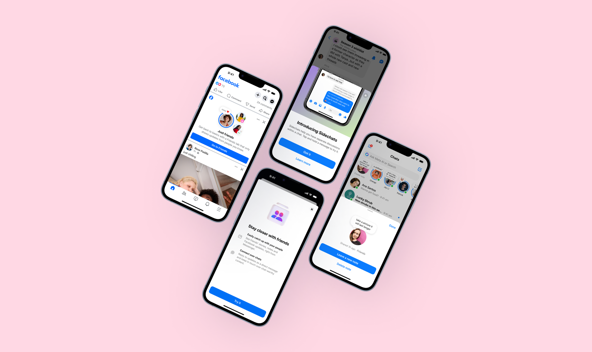
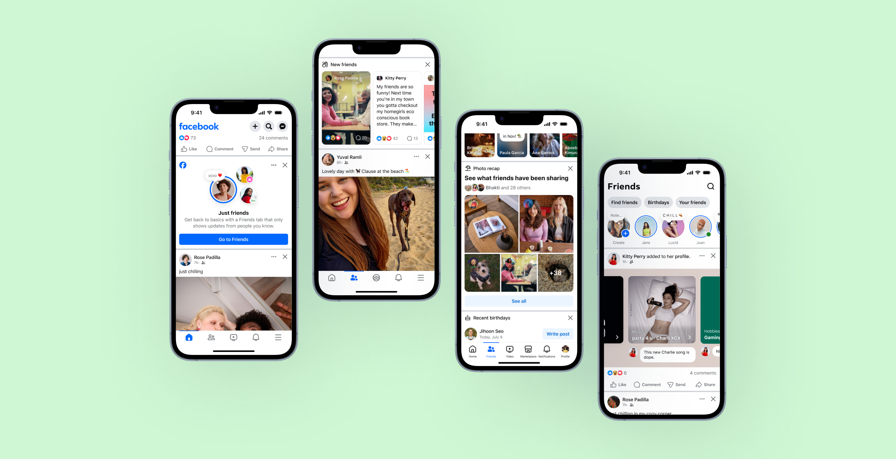

Case study:
Building a new messaging paradigm

The problem
The way people connected online was changing. We saw large communities forming around niche interests, with a demand for instant messaging as a way to connect (think Discord, Telegram). However, Messenger was built for private chats between people who already knew each other. There was no way to message a loosely-connected community at scale.
The brief: build a public messaging surface from scratch, inside an app a billion people already had muscle memory for.
Key challenges: Public messaging breaks the mental model users hold about a private app, like who can see this and who can find me. We were also designing open messaging while Messenger sprinted toward end-to-end encryption for everyone. And Communities had to connect back to Facebook Groups: two design systems with one experience.


What I did
I was one of three content designers on Communities, and a lead for most of this time. The work spanned across:
- Naming — partnered with UX and market research to define the product and feature names: community chats, broadcast chats, sidechats.
- Information architecture — how communities, channels, and chats related, how that structure read to someone who'd only ever messaged one-to-one, and how that structure tied to Facebook Groups.
- Voice, tone, and content standards — ran extensive content tests to learn which value props resonated, then scaled those learnings into the standards the product grew on.
- EU regulatory language — the compliant flows and disclosures that unlocked launch in Europe.
- Onboarding and activation — helping people understand, join, and participate once the product existed.
and then what happened?
- We took Communities from dogfooding through public testing to a global launch in 2022, announced personally by Mark Zuckerberg.
- Communities grew to 350 million users and 30% of all Messenger sends.
- My onboarding and activation work drove a 5x improvement in top-of-funnel adoption.
- In 2024, Communities graduated into a standalone product, covered by TechCrunch and The Verge. I led the upgrade pathing project to migrate legacy group chats into this new experience.
What I learned
- Building a new paradigm taught me that mental models must be built in layers, across naming, onboarding, repetition and crystal-clear content strategy. I also learned that the "MVP" can't stay minimal for long — once ours shipped, we couldn't design additional bells and whistles until the core experience was solid. Finally, I learned that simplicity reigns above all else, and taking a step back (or disconnecting your project from the Facebook Groups ecosystem) is the best thing you can do for success.